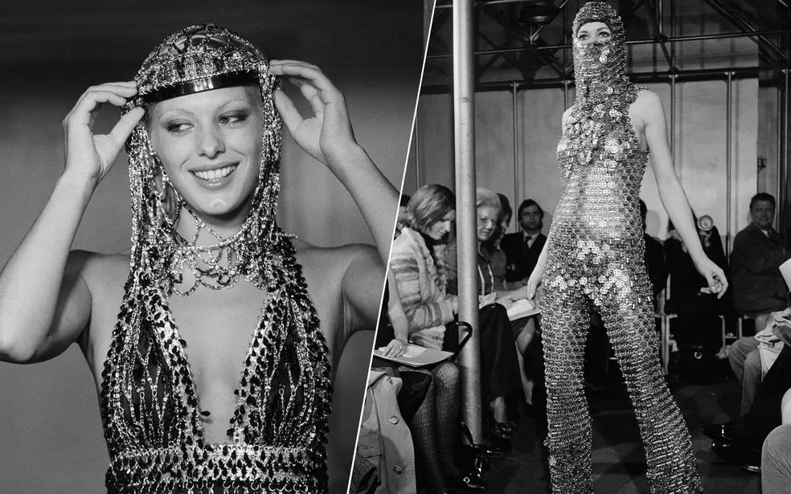
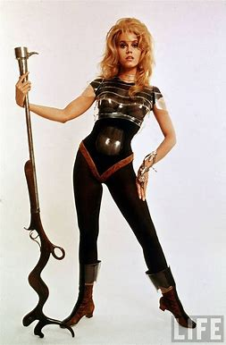
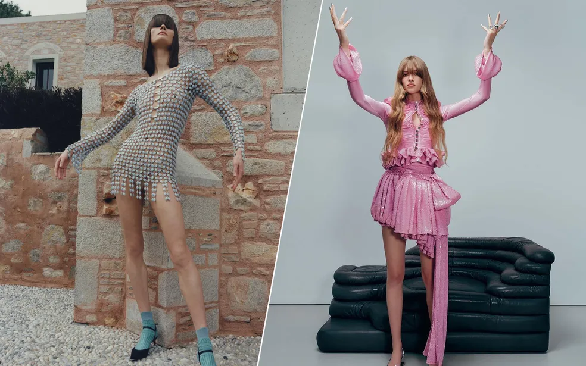
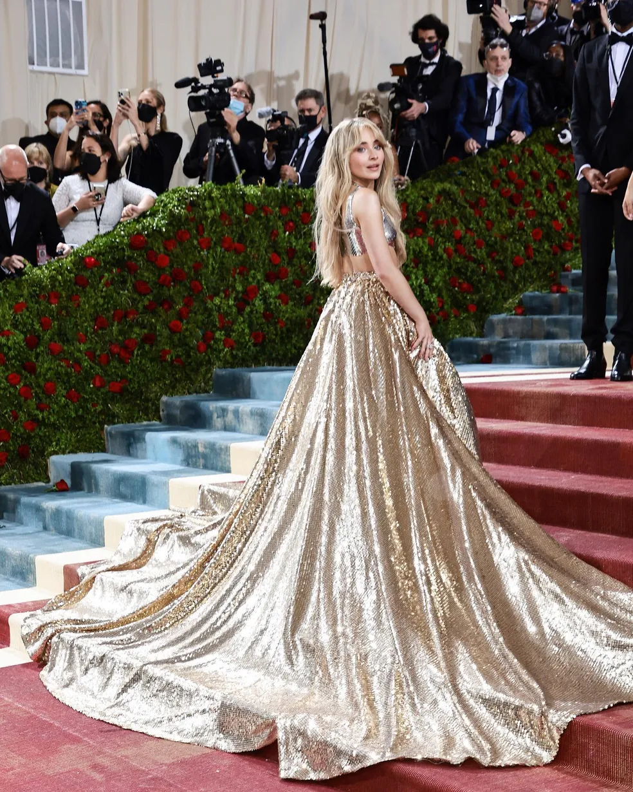
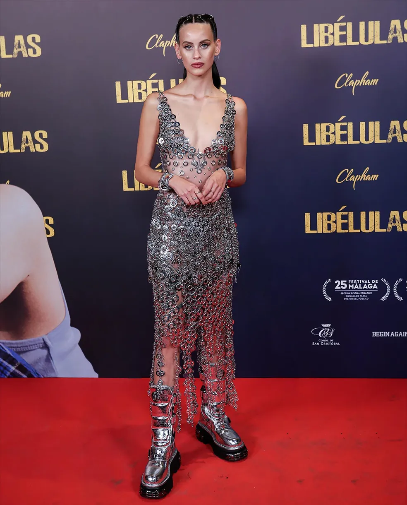
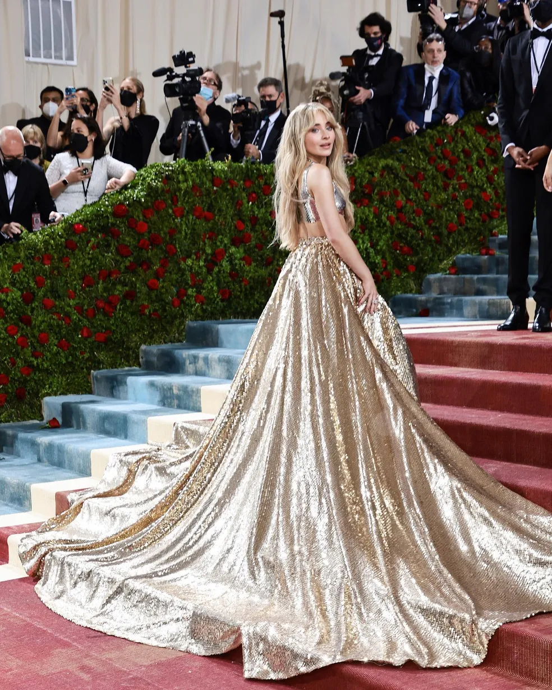
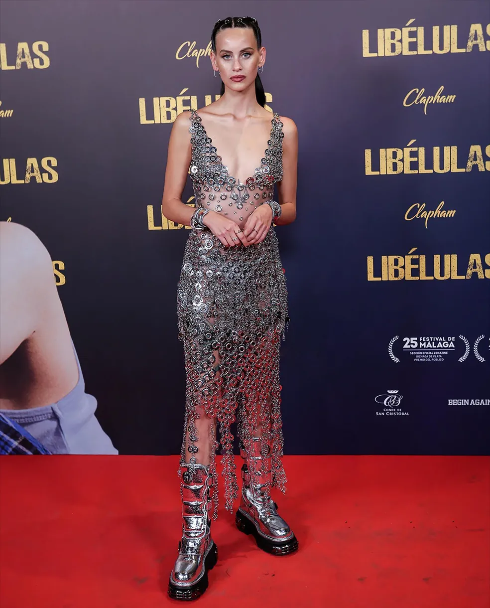

PACO RABANE E SEU LEGADO
Nos anos 60, os Estados Unidos e a União Soviética se enfrentavam em uma disputa espacial, no período que ficou conhecido como Guerra Fria. De descobertas tecnológicas ao primeiro homem a pisar na Lua, estilistas como Rabanne e Pierre Cardin tiraram inspiração para as coleções da época.
Estreia na moda
O designer francês já era um veterano da moda quando o espanhol apresentou seu primeiro desfile, em 1966. Batizada de "Manifesto: 12 vestido não-usáveis em materiais contemporâneos", a coleção contou com peças feitas dos mais inusitados elementos, como papel, plástico, metal, tecidos holográficos e até chocolate.
Os vestidos poderiam mesmo não ser "usáveis", mas conquistou uma legião de fãs. Em pouco tempo, ele estaria criando o figurino de Jane Fonda no clássico filme italiano "Barbarella", o mesmo que recentemente inspirou a série de looks de Anitta.
Peças icônicas
Na mesma época em que "2001 - Uma Odisseia no Espaço" explodia nas bilheterias, a estética futurística se tornou tema para as artes, arquitetura, música, audiovisual e, é claro, na moda. O tema refletiu, de alguma forma, por toda a trajetória de Rabanne, resultando em algumas das mais icônicas peças da história da moda.
Além dos vestidos já mencionados, faz parte deste "museu" do artista a famosa bolsa Nano 1969. Toda feita com peças de metal, o acessório de quase R$ 8 mil é queridinho até hoje pelos fashionistas.
Tapete vermelho
De 1960 para cá, Paco Rabanne vestiu as mais importantes celebridades do mundo! Veja algumas delas:
 


